Selected Work
Styling · Editorial · Campaign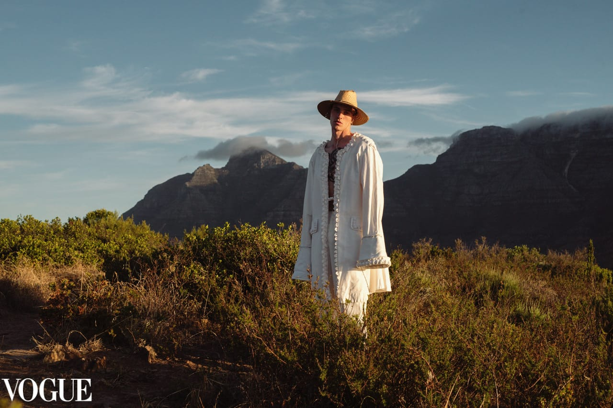
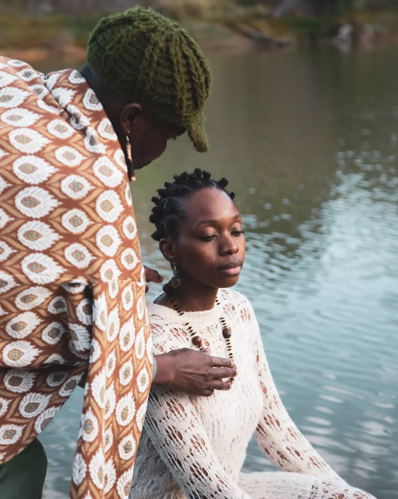
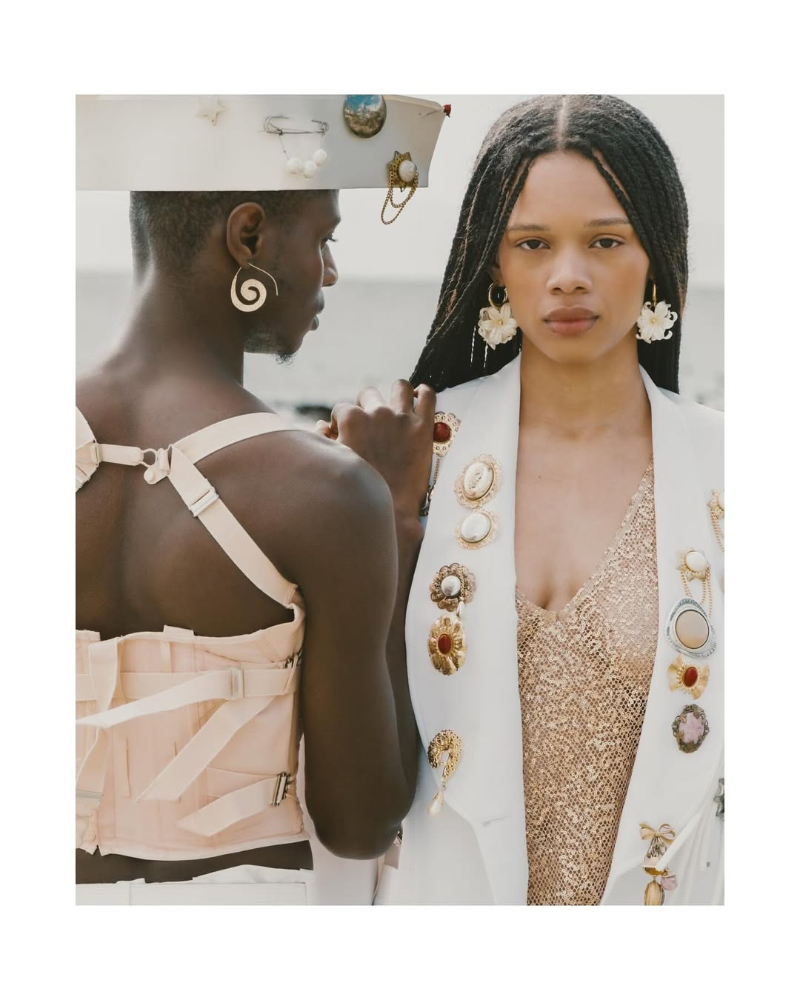
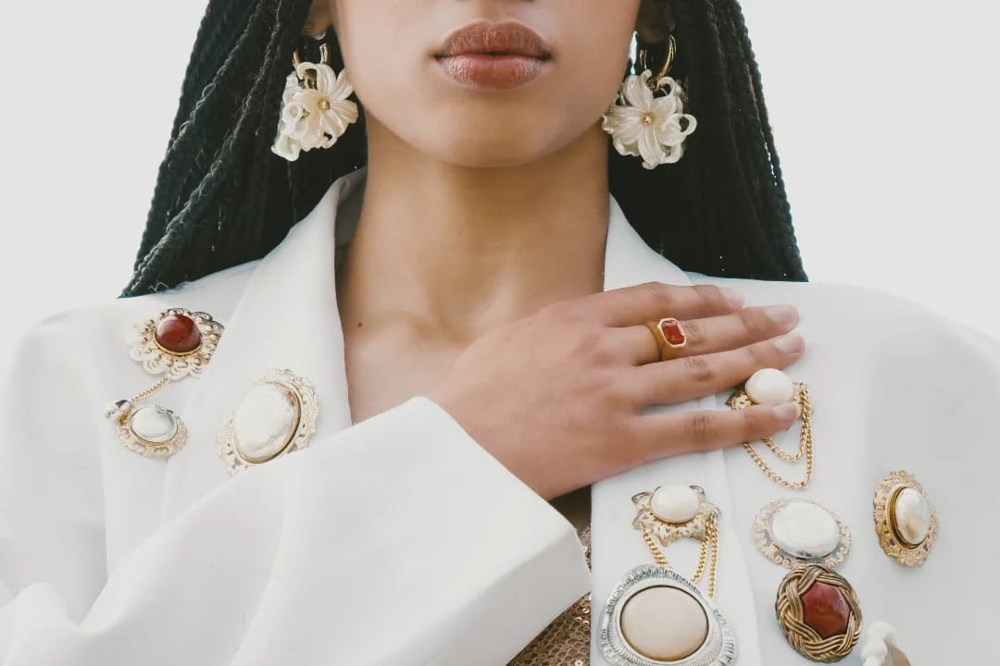
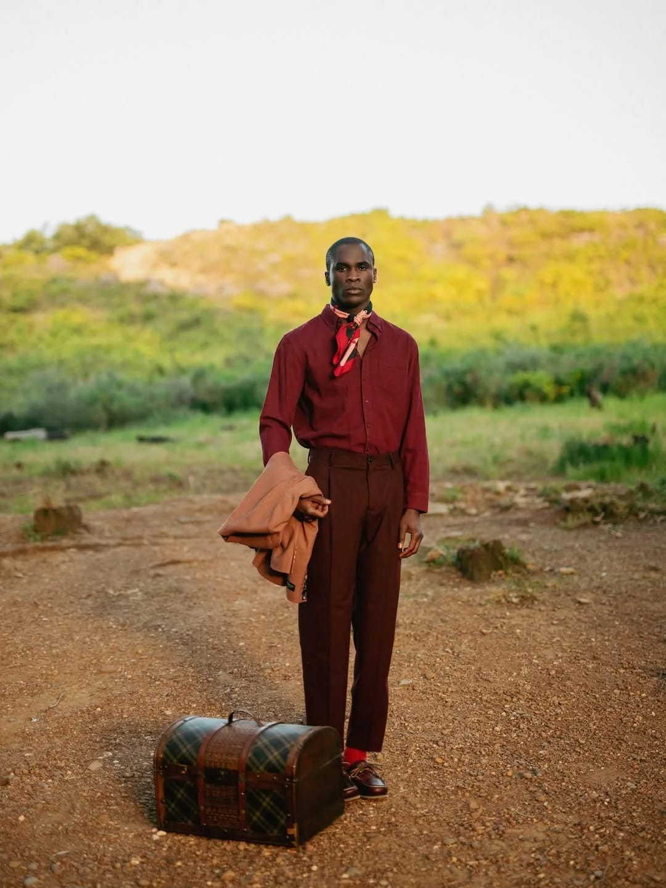
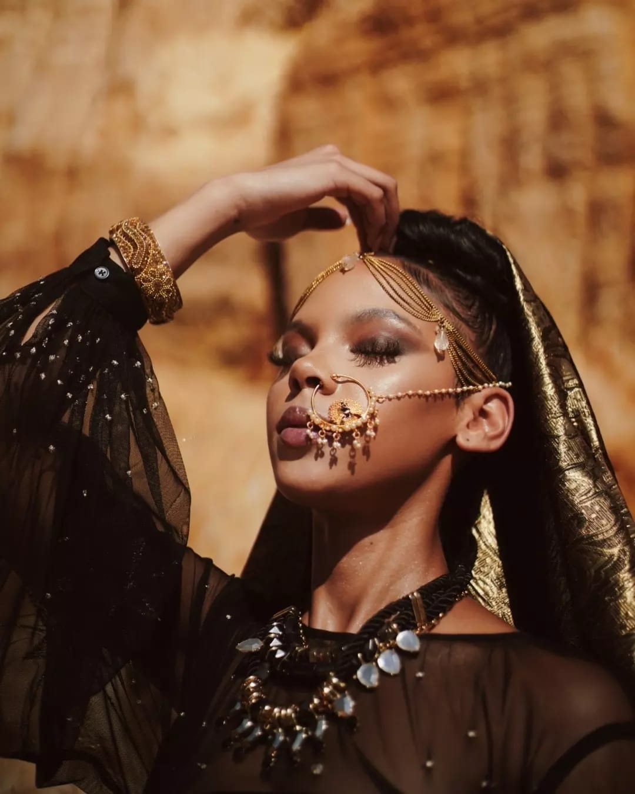
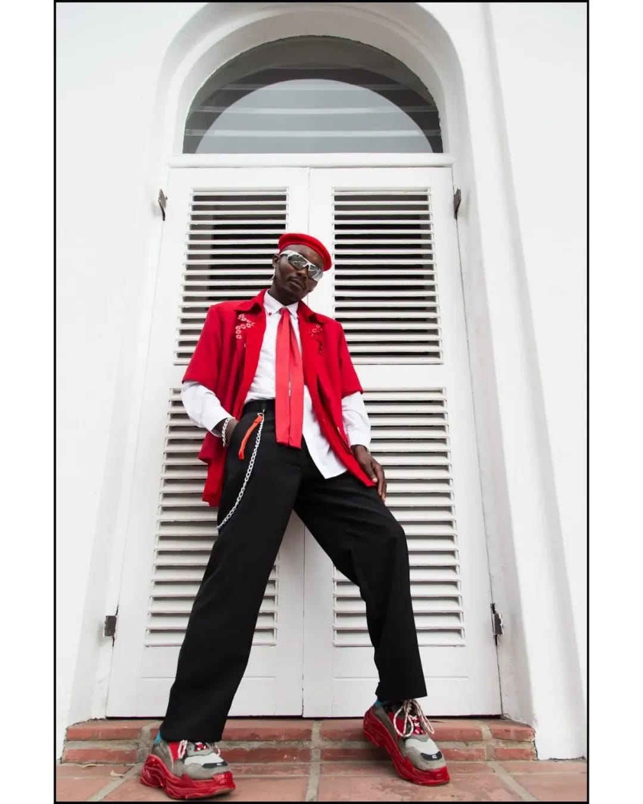
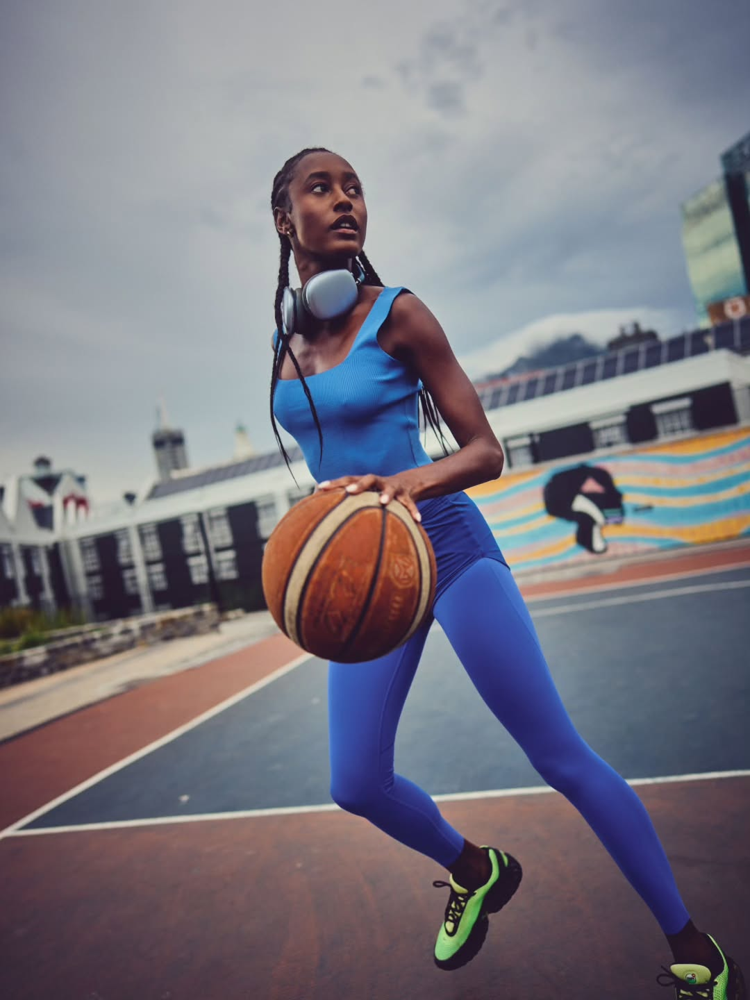
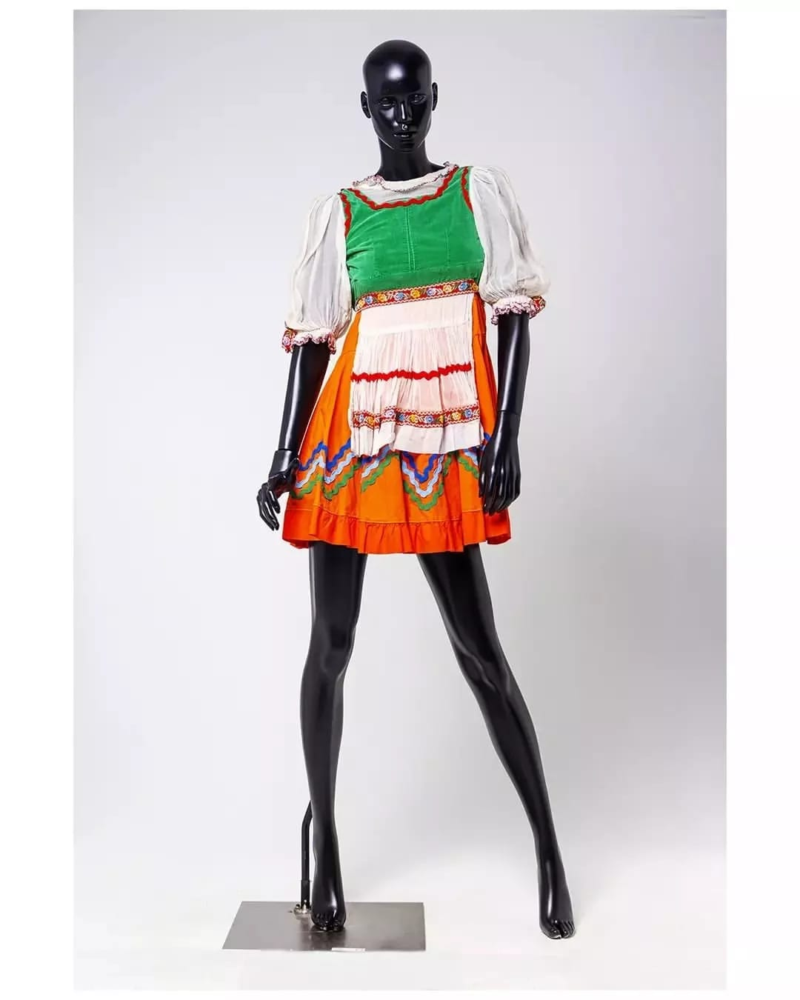
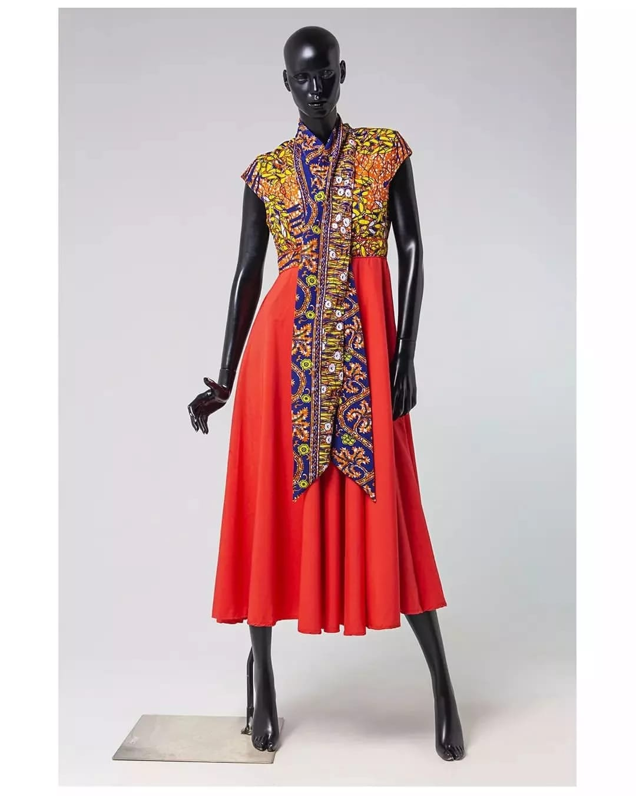
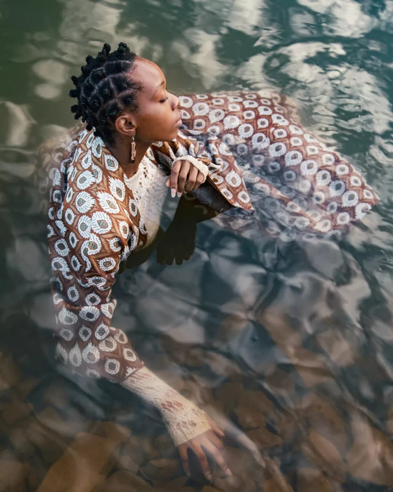
Where African fashion research meets the shoot.
Wardrobe Stylist · Designer · Creative Researcher — Cape Town / Johannesburg










Clients, Publications & Collaborators
The Market Theatre Foundation · Vogue · 17.23 Magazine · Twenty Model Management
About
Ande Mafenuka — known as Samba — is a wardrobe stylist, designer and creative researcher working between Cape Town and Johannesburg.
His practice treats styling as research: every shoot begins with cultural reference and ends as image — building looks that carry intellectual rigour and cultural specificity, not just taste.
Contact
Available for editorial, campaign & creative direction.
sambastylist@gmail.com